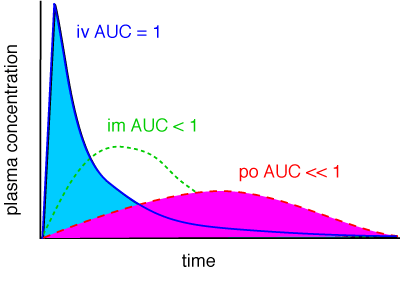

Bioavailability
The bioavailability of a drug is the fraction of the dose given which finds it way into the systemic circulation. It should be noted that this is not necessarily equal to the fraction of the dose which is absorbed, since a drug might be absorbed, for example across the gastrointestinal lumen, but removed from the portal blood by the liver by metabolism before reaching the systemic circulation. Similarly, for topically applied drugs the skin is an organ of drug metabolism and might biotransform a drug already absorbed before it reaches the circulation. The same of course is true for drugs administered by any route other than a simple intravenous injection.
The bioavailability is calculated from the area under the plasma concentration / time curve and expressed as a proportion of the area under the iv curve, ie, if the area under the po curve is 20% of the area under the iv curve, the bioavailability is 0.2 or 20%.

| 3 Pharmacokinetics index |
| |
copyright
Massey University
|